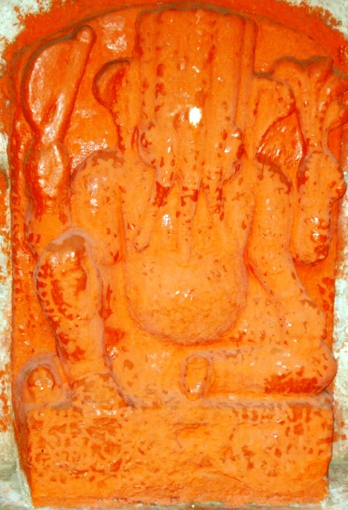

<?xml version="1.0" encoding="UTF-8"?><rss version="2.0"
	xmlns:content="http://purl.org/rss/1.0/modules/content/"
	xmlns:wfw="http://wellformedweb.org/CommentAPI/"
	xmlns:dc="http://purl.org/dc/elements/1.1/"
	xmlns:atom="http://www.w3.org/2005/Atom"
	xmlns:sy="http://purl.org/rss/1.0/modules/syndication/"
	xmlns:slash="http://purl.org/rss/1.0/modules/slash/"
	>

<channel>
	<title>Panchasya Vinayak &#8211; Varanasi Temples</title>
	<atom:link href="index.html" rel="self" type="application/rss+xml" />
	<link>../../../../index.html</link>
	<description>Temples of Varanasi as referred to in Kashi Khand</description>
	<lastBuildDate>Thu, 19 Jun 2025 05:16:46 +0000</lastBuildDate>
	<language>en-US</language>
	<sy:updatePeriod>hourly</sy:updatePeriod>
	<sy:updateFrequency>1</sy:updateFrequency>
	<generator>https://wordpress.org/?v=4.6.29</generator>
	<item>
		<title>PANCHASYA VINAYAK</title>
		<link>../../../../vinayak-temples/panchasya-vinayak/index.html</link>
		<pubDate>Fri, 07 May 2010 16:50:02 +0000</pubDate>
		<dc:creator><![CDATA[admin]]></dc:creator>
				<category><![CDATA[Panchasya Vinayak]]></category>
		<category><![CDATA[Vinayak Temples]]></category>
		<category><![CDATA[shri kedareshwar vinayak]]></category>

		<guid isPermaLink="false">../../../../p=118.html</guid>
		<description><![CDATA[Panchasya Vinayak is located at Pishachmochan, at C-21/40. Kashi Khand mentions this as Pancha Mukha Vinayak (five faced Vinayak). This Vinayak guards Kashi area from the western side.  (PANCHASYA VINAYAK) Please watch our YouTube Video about Panchasya Vinayak at following Link &#160; https://www.youtube.com/watch?v=MbC7Ju8ghLk&#38;t=55s TYPES OF POOJA The place of worship is open practically throughout and devotees [&#8230;]]]></description>
				<content:encoded><![CDATA[<p>Panchasya Vinayak is located at Pishachmochan, at C-21/40. Kashi Khand mentions this as Pancha Mukha Vinayak (five faced Vinayak). This Vinayak guards Kashi area from the western side.</p>
<h3></h3>
<h3 style="text-align: center;"> (PANCHASYA VINAYAK)</h3>
<p><strong>Please watch our YouTube Video about Panchasya Vinayak at following Link</strong></p>
<p>&nbsp;</p>
<p><a href="https://www.youtube.com/watch?v=MbC7Ju8ghLk&amp;t=55s">https://www.youtube.com/watch?v=MbC7Ju8ghLk&amp;t=55s</a></p>
<h3></h3>
<h3></h3>
<h3>TYPES OF POOJA</h3>
<p>The place of worship is open practically throughout and devotees can perform pooja by themselves.</p>
]]></content:encoded>
			</item>
	</channel>
</rss>
